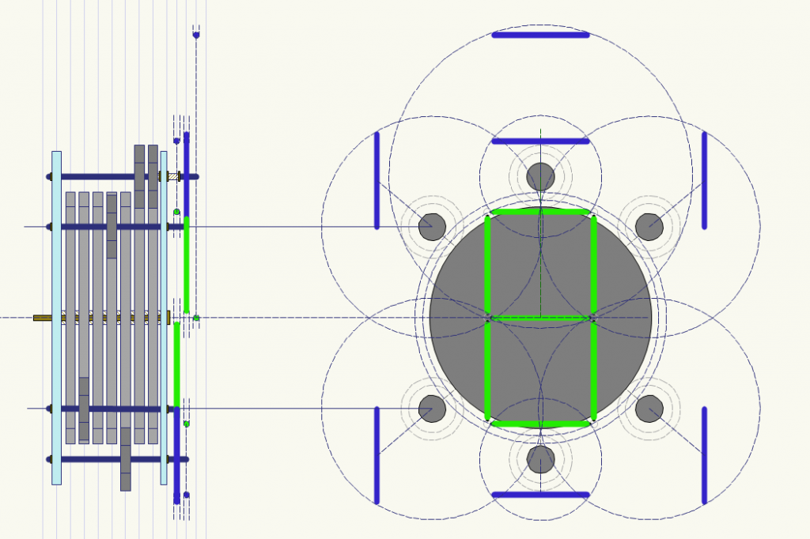
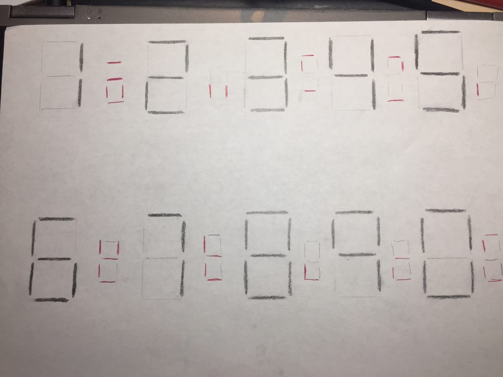
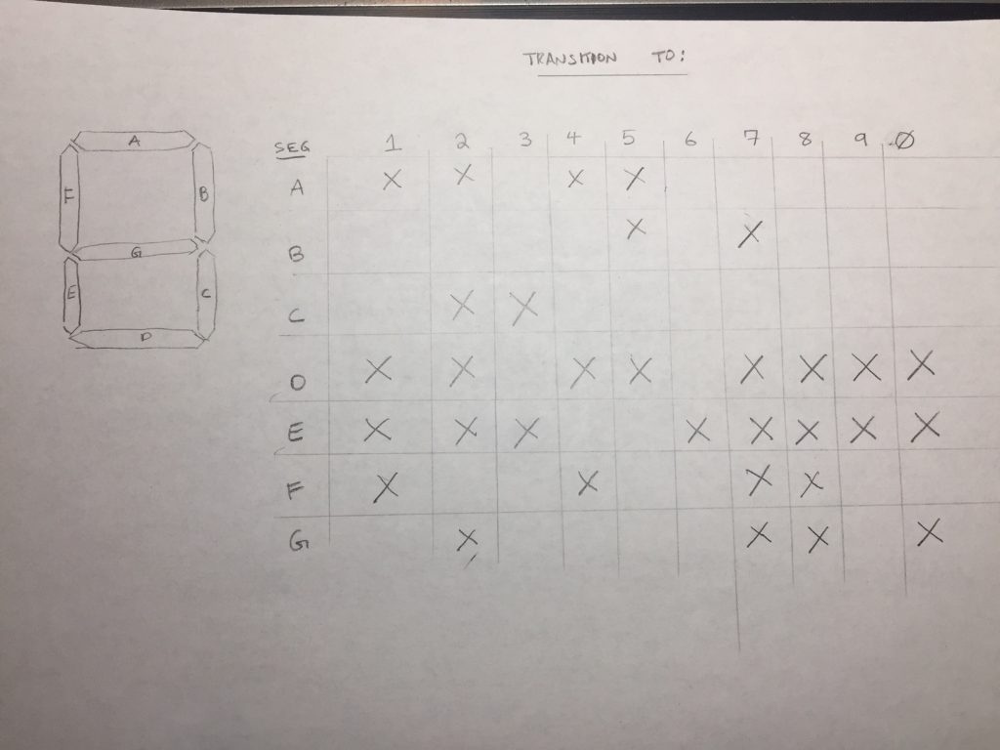
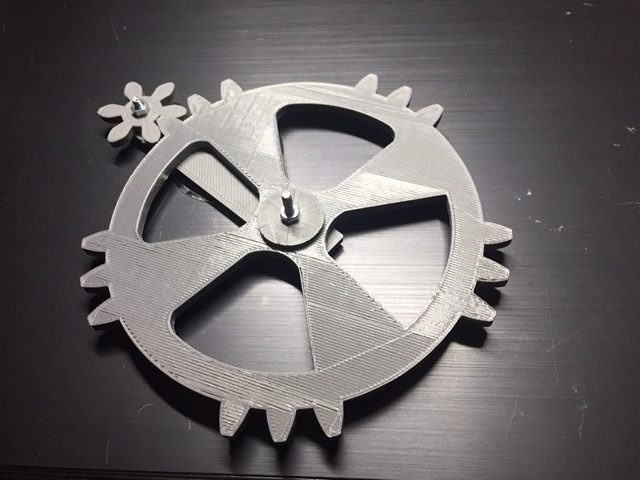

Geared 7-Segment Display - Part 1
Over the weekend, I got started on a project I’ve been musing about for a few months – making a mechanical 7-segment display, using gears to move individual segments in and out of the display area via rotation of a central shaft or belt.
The inspiration for this idea is undoubtedly Arthur Ganson’s mechanical sculpture Gary’s Yellow Chair at the MIT Museum in Cambridge, video of which periodically makes the rounds on Reddit. In it, a bicycle-chain drive six separate sprockets, each of which moves a long rod to which is connected one sixth of a chair. Each time the sprockets make a full rotation, their connected arms point toward a central point and the fragments of the chair briefly assemble into a whole (if tiny) yellow chair. Then the pieces split apart again, sent on another rotation by the action of the driving chain.
{{< youtube pVnucmsKX8E >}}
In this vein, my goal is to create a series of seven moving arms, each with a segment of a 7-segment display on it. A central shaft will drift seven attached gears, each with teeth placed and left out at specific intervals. These seven drive gears will turn seven arm gears, which in turn attach via shafts to long, thin (metal?) arms at the front of the device. The spacing of the teeth on the drive gears will ensure that each of the arm gears turns at the appropriate time to move the segments in and out of the display area. Each time the arm gear needs to move an arm in or out of the way, the drive gear will cause its paired arm gear
Here is a quick drafting of how I currently think this project will be laid out. The grey circles indicate the base circle of each gear, while the concentric circles are the pitch and addendum (i.e. maximum extent) circles. The green segments indicate when a given physical segment is in its "displayed" position, while blue indicates where that segment will be when "not displayed". The dotted lines around each segment indicate its travel, and are useful that none of the arms sweep through another segment's shaft. In section, you can see that the segments are going to be situated on 3 different front-to-back planes to avoid collisions between arms and shafts. You can also see the concentric relationship between the top segment and the center segment.

It turns out, fitting 7 arm gears around what is essentially one central drive gear shaft is tricky, especially to do so in such a way that none of the arms contact each others’ shafts as they rotate. To accommodate this, I currently have the top segment operated with a hollow shaft, and the shaft for the center segment runs through this hollow shaft to protrude out the top. We’ll see how that goes.
Here is a quick sketch of the digits on a typical 7-segment display as it moves through the digits 0 through 9. The small red marks in between each digital denote which segments change between digits.

Which leads us to the following chart of which segments need to move between which digits. Note that the horizontal axis is for “moving to this digit,” so that an X in the “7” column, for example, means that that segment needs to change when moving from a 6 to a 7.

After some preliminary work in Fusion360, I did a couple preliminary test prints, both of one of the “30-tooth” drive gears and some of the 6-tooth pinion gears. (Since the total number of possible necessary transitions is 10, and each transition only needs to turn the arm gears ½ a rotation, the arm gears have 1/5 as many teeth as the drive gears.) You can also see one of the 2mm spacer washes I whipped up, which I think will be unnecessary (see below).

With the slight creep and elephant’s-foot that my printer makes, I think I will need to depth these a little further apart than the idealized spacing – even when the teeth are not engaged, the tips of the pinon teeth drag a bit on the drive gear. Even another .2 or .4 millimeters would help here.
It occurs to me at this point that there’s no reason for the central gears to all be separate assemblies and prints – they’re all meant to rotate in lockstep, so there’s no reason not to print them as one large barrel with protruding teeth at 7 depths. That will be a necessary future improvement. Of course, the supports, axel holes, and whatever I’m doing for that hollow shaft are also future problems to be solved.